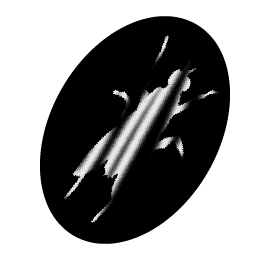

<!doctype html>
<html>
<head>
<meta charset="UTF-8">
<title>Template Article 2 - Manifeste</title>
<link href="css/articles-style.css" rel="stylesheet" type="text/css">
<link href="css/footer-style.css" rel="stylesheet" type="text/css">
<link href="css/header-style.css" rel="stylesheet" type="text/css">
<link rel="stylesheet" href="https://use.typekit.net/wig2gqu.css">
<!-- Acumin-->
</head>

<body>
<div id="au-travers-de-ta-fenetre">
  <header>
	<div class="row">
		
		<div class="img-box">
	    	
		</div>
	</div>
</header>
  <main>
	  
    <div class="row">
      <section class="title">
        <h1>Au travers <span class="sans-serif"><span id="pos-tweak1"><br>de ta </span><span id="pos-tweak2"><br>fenêtre </span></span></h1>
      </section>
    </div>
	  
    <div class="row">
	  <section class="credits col-small">
        <p>Écrit par:</p>
        <p class="author">Jeanne Goudreault-Marcoux</p>
        <p>Visuel par:</p>
        <p class="visuals-by">Mathieu Larone</p>
      </section>
	  <section class="col-large hero">
	    
	</section>
		  
	  </div><!-- end of row -->
	  
    <section class="intro thin">
      <div class="row">
        <section class="quote full-col centered">
          <blockquote>une constellation, ton visage. Tu baignes dans la lumière orange, le soleil d’hiver incrusté dans les sillons de tes rivières. Ton corps est 
de papier et je caresse ta peau parchemin. 
Je me demande</blockquote>
        </section>
      </div>
    </section>
    <section class="text-container">
	  
	  
<div class="row">
        <section class="half-col centered justified article-text">
			<p class="serif">quand es-tu devenu fragile</p>
			<br>
			<p>je ne sais plus ton âge, je ne te sais plus. il y a tes yeux, ceux que je connais, mais ta barbe blanche est une ombre, c’est un voile, on la devine, elle s’efface, tu t’effaces dans l’espace. tu es assis dans ton fauteuil, tu disparais dans le cuir. ta tête marque la mesure du temps qui te fuit. un courant d’air traverse ton appartement et tes pores saignent la vieillesse. tu me dis quelque chose, te lèves et marches en précarité.</p>
			<br>
			<p class="serif">toujours la possibilité de<br>
			  ta chute occupe tes <br>
		    mouvements</p>
			<br>
			<p>je te presse de t’asseoir, de calmer mon angoisse. ton agacement est plus grand que mes craintes. je te regarde chercher la photo, la relique douce-amère du temps d’avant. je me souviens. j’ai les souvenirs de toi. je te retrouve dans le défilement des paysages, déchirés par la lumière des phares. les routes infinies, Cohen et chicanes d’enfants… tu te rappelles à moi dans les odeurs de forêts, de bois combustion. tu as été un homme tempête, tu as été le vent, les douces soirées autour du feu. mes souvenirs sont ta jeunesse et je te rejoins hors du temps.</p>
			<br>
			<p class="serif">tu t’effrites dans l’attente</p>
			<br>
			<p>un jour tu as commencé à observer par la fenêtre les allées, les venues des passants. ta rue te narguait, tu ne voyais que sa finitude. tu as épié les pas, les rires et les étrangetés, ton regard circonscrit par la fenêtre, la brèche du dedans sur le dehors. la fatigue t’a gagné, insidieuse. tu t’es mis à errer dans l’espace de ton lieu, l’extérieur t’as quitté et tu es devenu vieux.</p>
			<br>
			<p>une mouche traverse la pièce, c’est absurde une mouche au mois de janvier. les vieux ne devraient pas côtoyer les mouches, c’est trop lourd de sens. à nouveau dans ta chaise, tu t’inscris en immobilisme et la mouche file. tu ne l’as pas vue, pas entendue. aujourd’hui tu radotes la même histoire une fois, deux fois, cinq fois et, derrière mon oreille, ton regard fixe le souvenir de ta jeunesse. moi, je regarde tes sillons, trace ton immensité. tu es inondé de lumière.</p>
			
		  </section>
		  <section class="half-col centered justified article-text">
			  
			  <p class="serif">tes mains caressent <br>
		    comme au ralenti les courants <br>invisibles du temps</p>
			  <br>
			<p>oublies-tu qu’il se dépose sur ton front, te file entre les doigts après t’avoir dévalisé ? un sourire absent. la vitalité vacille entre tes lèvres, tu es beau, tes rivières, ta peau froissée douceur sous tes couches en pelure d’oignon. tu as fondu. je grimpais sur ton dos, on brisait les vagues, crevait le ciel. on se lançait des blessures par-dessus la tête aussi. tu étais explosif, j’étais de toi.</p>
			  <br>
			<p>nos traits partagés se sont effacés dans ta vieillesse générique. je ne me reconnais plus. ton visage fripé, le voile blanc. un jour je t’ai parlé et le silence est resté. mes mots ne se rendaient plus. un défaut d’usure, ton corps a flanché. tu ne l’admets pas encore de ta voix râpée, mais tes yeux disent tout. un râle nous surprend, brise la monotonie du calorifère. c’est un sursaut dans ta respiration.</p>
			  <br>
			<p class="serif">ton existence figée<br> dans l’incertitude</p>
			  <br>
			<p>tes yeux agrippent mon visage et ils sont pleins de la lumière d’hiver. je le vois, ça bouillonne sous les paupières. tu as encore tout ton amour, il est sur ta langue, tu connais encore mon nom. je te tiens par ces lettres.</p>
			  <br>
			<p>une fois, je me souviens, tu as dansé toute la nuit avec maman. vous étiez amoureux. il y avait une envie de fête qui nous agitait tous, mais vous, vous étiez infatigables. tu avais vingt ans devant moi, je te voyais immuable.</p>
			  <br>
			  <br>
			  <br>
			  <br>
			  <br>
			  <br>
			  <br>
			  <br>
			  <br>
			<p class="serif">comment te survivre</p>
			  <br>
			<p>dehors, le vent secoue le vide des arbres gris, soulève les abris tempo. j’imagine le mutisme ; les oiseaux se cachent entre les briques.</p>
          
        </section>
      </div>
      <!-- end of row --> 
    </section>
  </main>
</div>
	
	
	<!-- FOOTER -->
	<footer>
	<nav>
		<div class="row">
		<section class="col-small">
			<div class="row">
				<div class="img-box">
				 </div>
			  <p>Précédent</p>
			</div>
		</section>
		<section class="col-small">
			<div class="row">
				<p>Prochain</p>
				<div class="img-box">
				 </div>
			</div>
		</section>

	</div>
	</nav>
		
	<nav>
		
	<div class="row">
		
		<div class="quarter-col"><!-- vérités -->
			
			<ul>
				
					<div class="img-box">
			  			
					</div>
				
				<li><a href="fatum.html">Fatum</a></li>
				<li><a href="au-travers-de-ta-fenetre.html">Au travers de ta fenêtre</a></li>
				<li><a href="ton-corps.html"><s>Ton</s> corps</a></li>
				<li><a href="la-mort-eclot-toujours-sans-douleur.html">La mort éclot toujours sans douleur</a></li>
			</ul>
		</div>
		
		
		
		<div class="quarter-col"><!-- entre les doigts -->
			
			
			<ul>
				
					<div class="img-box">
			  			
					</div>
				
				<li><a href="tricher-aux-echecs.html">Tricher aux <span class="serif">échecs</span></a></li>
				<li><a href="bribes.html"><span class="serif">Bribes</span></a></li>
				<li><a href="sub-conscient-intrusif.html">Sub<span class="serif">conscient</span></a></li>
				<li><a href="dieffenbachia.html">Dieffen<span class="serif">bachia</span></a></li>
				<li><a href="leo.html">Léo</a></li>
			</ul>
			
		</div>	
		<div class="quarter-col"><!-- interdit -->
		
			<ul>
				
					<div class="img-box">
			  			
					</div>
				
				<li><a href="defaire-le-lit.html">Défaire le lit</a></li>
				<li><a href="quelque-chose-comme.html">Quelque chose comme <span class="serif">10</span> sur l'échelle de <span class="serif">richter</span></a></li>
				<li><a href="a-dieu-vit.html">À dieu vit !</a></li>
			</ul>
		
		</div>
		<div class="quarter-col"><!-- univers à renouveau -->
			
			<ul>
				
					<div class="img-box">
			  			
					</div>
				
				<li><a href="art-virus.html"><span class="serif">Manifeste</span> pour un <span class="serif">art-virus</span></a></li>
				<li><a href="peluches-moutonnees-boutonnees.html">Peluches moutonnées boutonnées</a></li>
				<li><a href="matiere-grise.html"><span class="serif">Matière grise</span></a></li>
				<li><a href="nevrose.html">Névrose</a></li>
			</ul>
			
		</div>
		<div class="quarter-col"><!-- manifeste -->
			
			<ul>
				
					<div class="img-box" id="icon-manifeste">
			  			<a href="manifeste.html"></a>
					</div>
				
			</ul>
		</div>
		
	</div></nav>
	</footer>
	
</body>
</html>
